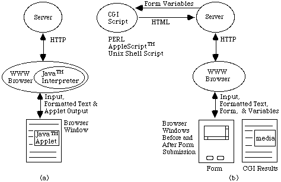
Hello {{name}} {{last}}
<input model="firstname">
<input model="lastname">
Hello {firstname} {lastname}
Hello {{name}} {{last}}
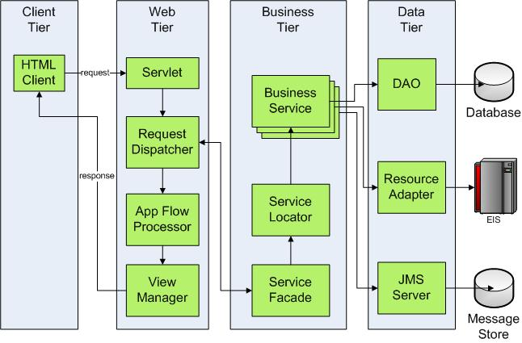
Trop compliqué !
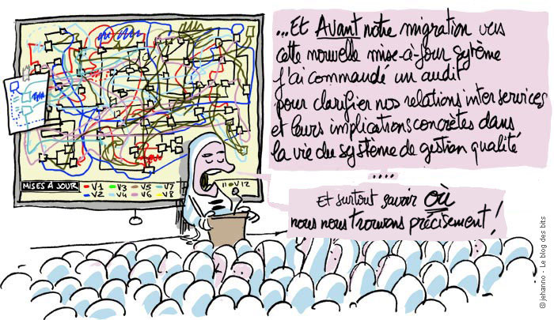
MVC Paradigm
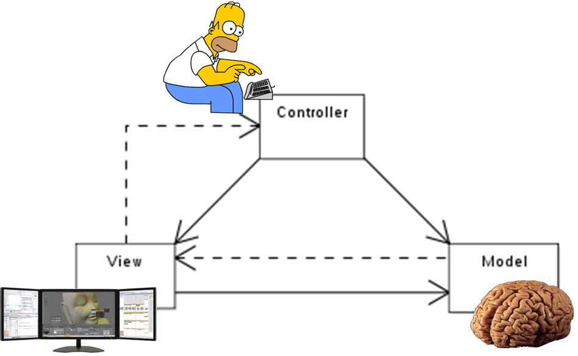
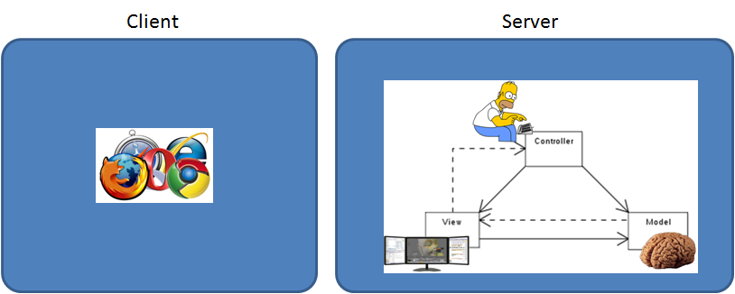
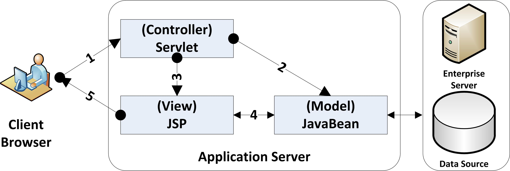
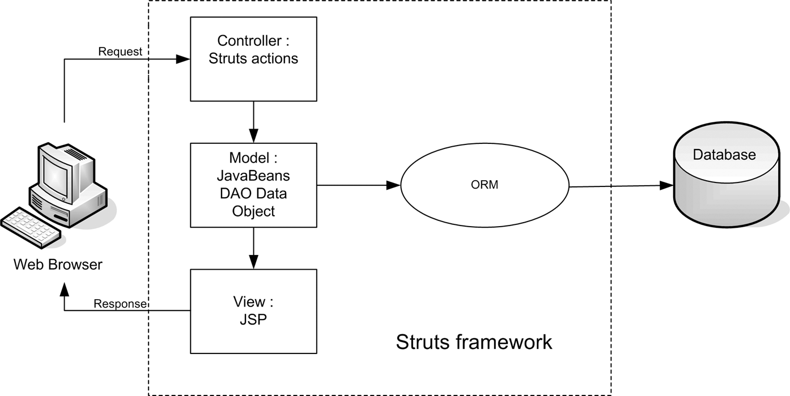
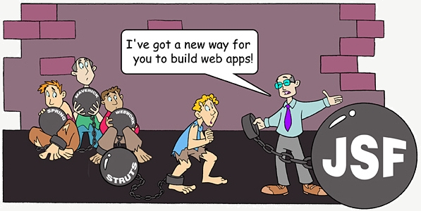
object-oriented user interfaces
limites du Paradigme : MVC Server
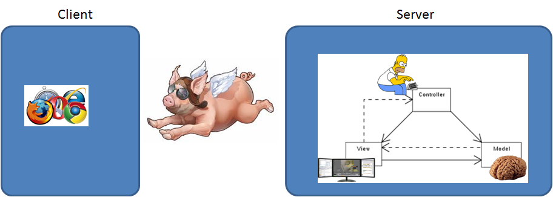
JQuery, Prototype
MVC Client Paradigm
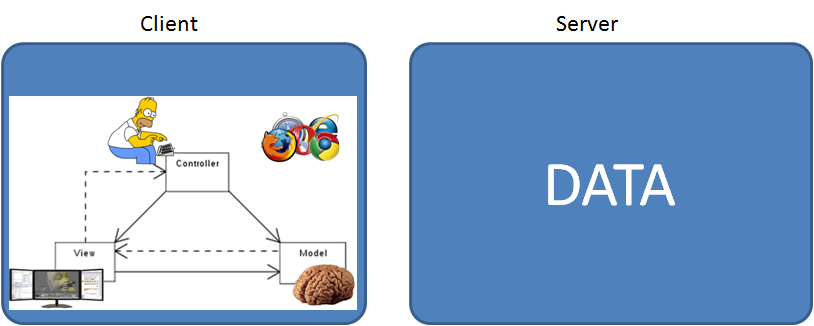
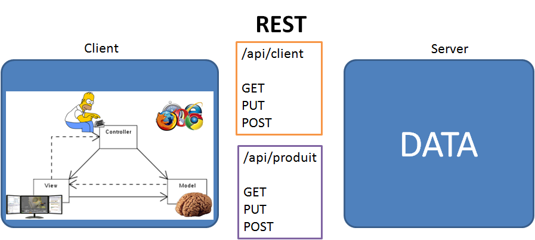
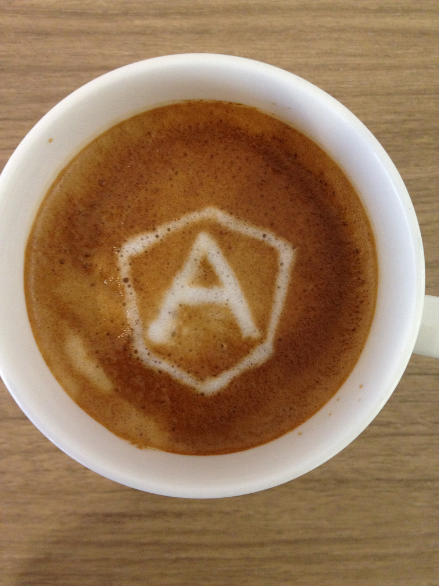
The father
Misko Hevery
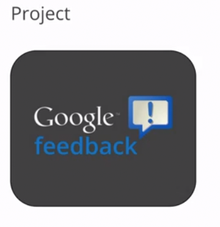
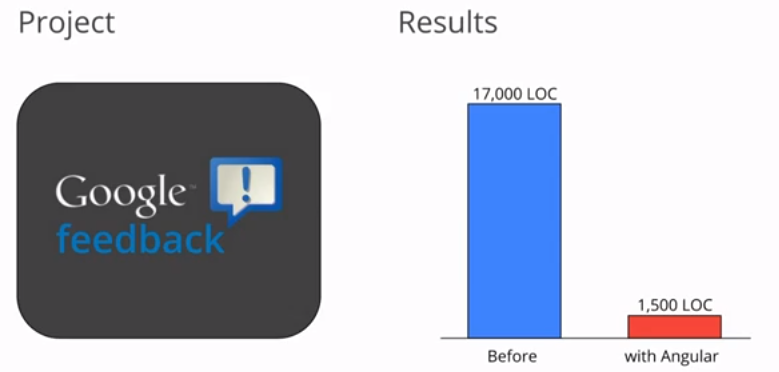
Principes
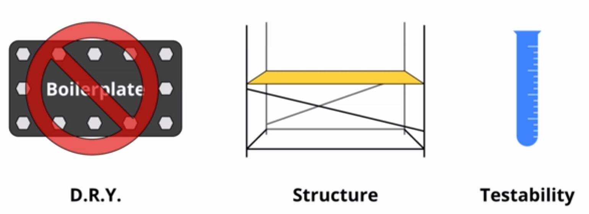
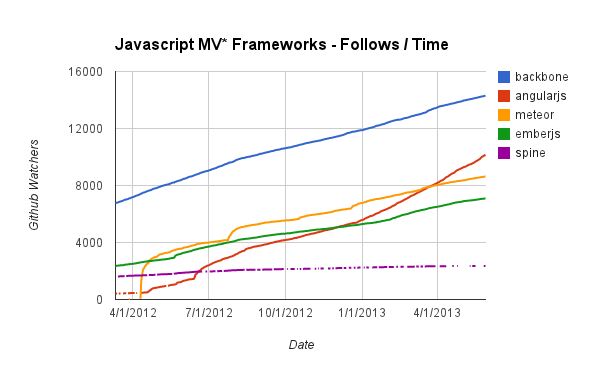
Ressources
egghead.io